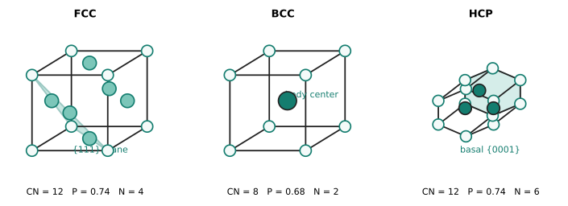
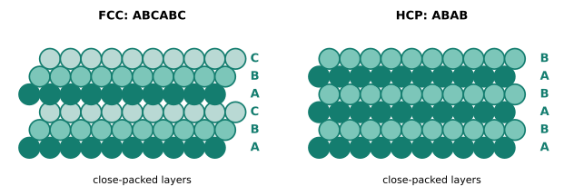

本页目录
结构 II · 晶体学：秩序的几何
固体里的许多原子排列呈现周期性——晶体常是低自由能的稳定或亚稳态，但玻璃和其他非晶态也可能长期存在。晶体学是描述这种秩序的几何语言：晶格、晶胞、晶面指数。它不是死记硬背的分类学：滑移为什么挑密排面、衍射为什么能测结构、各向异性从哪来，全部答案藏在这套几何里。
学习层：从一颗球的接触几何预测晶胞密度，再画出 Miller 平面
1. 具体工程情境：选择轻量晶格与可滑移晶面
把原子半径为 \(r\)、摩尔质量为 \(M\) 的元素放进理想 SC、BCC 或 FCC 晶格。材料工程师想先做两个快速筛查：同一 \(r,M\) 时哪种晶格最密、一个常规晶胞到底含几个原子；同时要能把 \((111)\) 或 \((110)\) 这样的晶面交给衍射、滑移和断裂分析，而不是只背一张表。
2. 必须作答的预测门：数原子、排密度、拒绝退化指数
在打开晶胞图前，先预测：FCC 常规晶胞的净原子数是 1、2 还是 4？固定 \(r,M\) 时 SC/BCC/FCC 的密度谁最大？\((0\ 0\ 0)\) 是一个合法晶面、一个无限间距平面，还是没有法向的退化输入？揭示后再拖动参数。
3. 正式公式桥：占位数 → APF → 密度
硬球接触的常规晶胞计数为
| 结构 | 角点贡献 | 面心贡献 | 体心贡献 | \(N\) | 配位数 |
|---|---|---|---|---|---|
| SC | \(8\times1/8\) | 0 | 0 | 1 | 6 |
| BCC | \(8\times1/8\) | 0 | 1 | 2 | 8 |
| FCC | \(8\times1/8\) | \(6\times1/2\) | 0 | 4 | 12 |
接触几何给出
理想硬球堆积因子和质量密度分别是
因为 \(1\ \mathrm{nm^3}=10^{-21}\ \mathrm{cm^3}\)。固定 \(r,M\) 时，\(\rho\propto N/a^3\)，所以理想模型给出 \(\mathrm{SC}<\mathrm{BCC}<\mathrm{FCC}\)；改动半径时密度按 \(r^{-3}\) 缩放。
4. Miller 指数的几何账本：法向、间距与退化
立方晶系中，整数 \((hkl)\) 的法向平行于 \([hkl]\)，且
指数为 0 意味着对应截距在无穷远，即该平面平行于相应晶轴；负指数是合法的反向截距，常写作上划线。所有指数不能同时为 0：\((000)\) 没有法向，不能硬套公式把它称作 \(d=\infty\)。对于负/零指数，实验会把同一法向的平行代表平移到晶胞内显示，并在文字账本中标出这个显示约定。
5. 动手实验：晶胞、平面和密度同步变化
JavaScript 失效时的静态 fallback：默认取 \(r=0.124\ \mathrm{nm}\)、\(M=55.845\ \mathrm{g\,mol^{-1}}\)、FCC 与 \((111)\)。SC/BCC/FCC 的精确结构账本仍为
| 结构 | \(N\) | 配位数 | APF | 晶格常数 |
|---|---|---|---|---|
| SC | 1 | 6 | \(\pi/6=0.5236\) | \(2r\) |
| BCC | 2 | 8 | \(\sqrt3\pi/8=0.6802\) | \(4r/\sqrt3\) |
| FCC | 4 | 12 | \(\pi/(3\sqrt2)=0.7405\) | \(2\sqrt2r\) |
默认平面为 \((111)\)，所以 \(d_{111}=a/\sqrt3\)；表格、晶胞原子和蓝色平面是同一组纯几何计算的不同投影。若输入 \((000)\)，静态答案应明确写“退化，拒绝”，而不是显示一个伪造的无穷间距。
6. 误区与模型边界
- 常规晶胞不一定是最小晶胞：这里数的是方便画图和计数的 conventional cell；primitive cell 的体积和原子数可不同，但同一晶格的物理密度不变。
- 0.74 有条件：FCC/HCP 的 0.74 是相同硬球的密排极限；真实原子有电子云、热振动、键方向性、空位和合金尺寸失配，测得 APF 不必等于这个理想数。
- 高指数面不自动等于“面上原子更稀”：\(d_{hkl}\) 随 \(h^2+k^2+l^2\) 变小，但平面原子密度还取决于基元和具体晶格，不能只从间距下结论。
- 晶向语法有边界：上述 \([hkl]\perp(hkl)\) 和 \(d_{hkl}\) 速算是立方晶系结论；六方、单斜等晶系需使用对应度量张量和四指数等工具。
7. 正式映射与工程后果
密度账本把几何直接接到轻量化筛选；Miller 账本把晶面间距接到 XRD 峰位、解理面和滑移面。工程上应再问一步：真实样品是否有织构、孔隙、固溶原子、热膨胀或相变？它们会让“理想晶胞密度”与实测密度、宏观各向异性分开。
迁移问题：若把同一元素的原子半径从 \(r\) 增到 \(2r\)，SC/BCC/FCC 的密度各缩小多少？若样品改成非立方晶体，你会保留哪一条质量守恒关系，又必须替换哪一条面间距公式？
1. 晶格语言三件套
晶格 = 点阵 + 基元：点阵是纯数学的周期骨架（14 种 Bravais 点阵、7 大晶系——枚举结果记结论即可），基元是每个格点上挂的原子组合。晶胞：能平移铺满全空间的重复单元；“最小”要区分 primitive cell 与便于展示的 conventional cell。晶格常数 \(a, b, c\) 与夹角描述它。
三大金属结构（本科主战场，各记三个数）：
| 结构 | 配位数 | 致密度 | 每胞原子数 | 代表 |
|---|---|---|---|---|
| 面心立方 FCC | 12 | 0.74 | 4 | Al、Cu、Ni、γ-Fe、Au |
| 体心立方 BCC | 8 | 0.68 | 2 | α-Fe、W、Cr、Mo |
| 密排六方 HCP | 12 | 0.74 | 6 | Mg、Ti、Zn |

FCC 与 HCP 在相同硬球模型下同为最密堆积（0.74 是等球堆积的数学极限——Kepler 猜想，1998 年才证毕），差别只在堆垛顺序 ABCABC vs ABAB——一层之差，塑性通道就可能不同（FCC 滑移系多而延展、HCP 滑移系少而挑剔，见 §3）。真实原子和缺陷会让这个理想 APF 只是基准。

间隙位置：密堆的缝隙（四面体/八面体间隙）是小原子的公寓——碳溶进铁的间隙是整个钢铁冶金的起点（FCC γ-Fe 的八面体间隙比 BCC 的大，所以奥氏体能溶更多碳——相图页那条 2.14% vs 0.02% 溶解度悬殊的几何原因，先按下）。
2. 晶向与晶面：Miller 指数
方向 \([uvw]\)、晶面 \((hkl)\)（截距取倒数化整——"倒数"的深意在倒易点阵，【研】衍射理论的原生语言）；族记号 \(\langle uvw\rangle, \{hkl\}\)。立方晶系两条速算：\([hkl] \perp (hkl)\)；面间距
——指数越高面间距越小、面上原子越稀。为什么要这套记号：材料的各向异性按晶向说话（硅片沿 \(\{111\}\) 解理、变压器硅钢要 \(\langle 001\rangle\) 织构、单晶叶片沿 \([001]\) 生长），没有指数语言这些话说不出口。
3. 密排面与滑移系（几何 → 力学的第一座桥）
塑性变形 = 原子层间滑动，而滑动永远挑最密排的面、最密排的方向（密排面间距最大 ⇒ 层间"咬合"最浅 ⇒ 剪切阻力最小）。滑移系 = 密排面 × 密排方向：
- FCC：\(\{111\}\times\langle110\rangle\) = 12 个滑移系——四通八达，故 Al/Cu 冷加工随便揉；
- BCC：密排方向 \(\langle111\rangle\) 明确、最密面不唯一，滑移可用系多但需更高应力且强烈温度敏感——低温下 BCC 金属变脆（韧脆转变——泰坦尼克号船板的教训，性能 II 主讲）；
- HCP：室温常只有基面 3 个独立滑移系——不够变形用（一般塑性需 5 个独立系，von Mises 判据【研】）⇒ Mg 难冷成形、Ti 加工讲究方向。
一张表看懂三类金属的加工性格——这就是晶体学的现金价值：结构（本页几何）→ 性能（加工性）的第一条完整逻辑链，四面体主线的首次全程贯通。
4. 单晶、多晶与织构
工程材料绝大多数是多晶：无数取向各异的小晶粒拼成，宏观性能 = 各向异性的取向平均（伪各向同性）。三个例外造就三类产品：单晶（涡轮叶片消灭晶界抗蠕变、硅锭给芯片完美衬底）；织构（轧制使晶粒取向趋同——各向异性回归：易拉罐深冲的制耳、硅钢的磁性方向）；纳米晶（晶界多到成为主角——结构 III 与性能 I 的剧情）。
5. 数字感与反直觉
- 晶格常数 ~0.3–0.6 nm；晶粒尺寸：铸态 ~mm、正常加工 10–100 μm、纳米晶 <100 nm——跨六个数量级的"秩序的秩序"；
- 致密度极限 0.74：再密就得改变几何（这就是为什么高压下才有更密的相变）；
- 反直觉：许多金属容易塑性变形，部分原因是晶体提供了较低阻力的位错滑移通道；玻璃没有长程周期晶格，变形则走剪切转变区等不同机制——秩序提供的是通道，不是单独决定硬软的开关。
【研】对标 Cullity《X 射线衍射》前三章与 Kelly & Knowles《Crystallography》；倒易点阵、点群/空间群（230 种）与结构因子是研究生晶体学的三大件，本站在工艺 III（衍射）给最小工作集。
完美的晶格讲完了——但完美的晶格既不能加工也不能导电调控。下一页进入本课的灵魂：缺陷，不完美的统治。